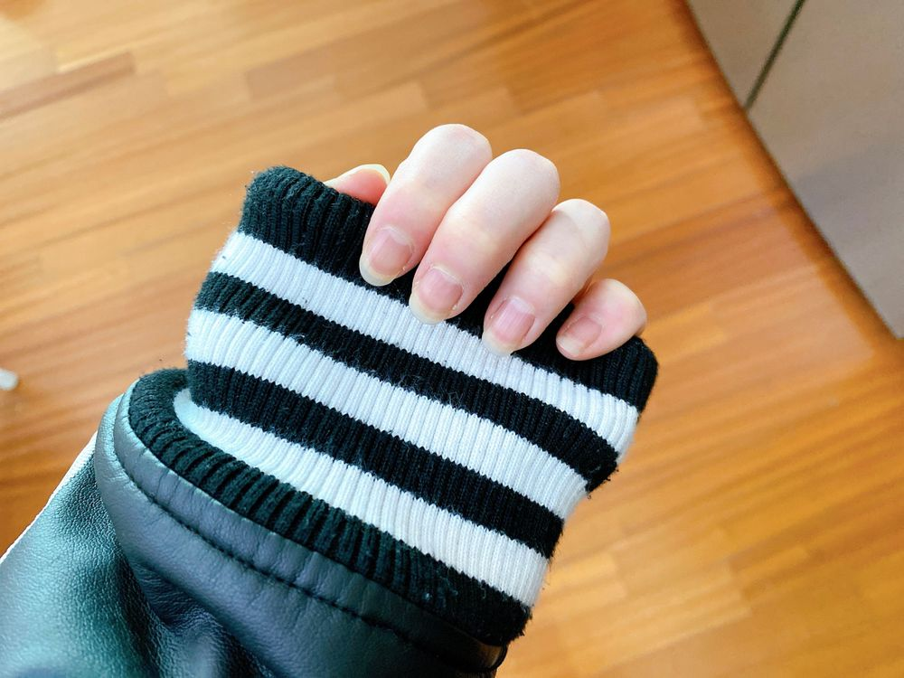
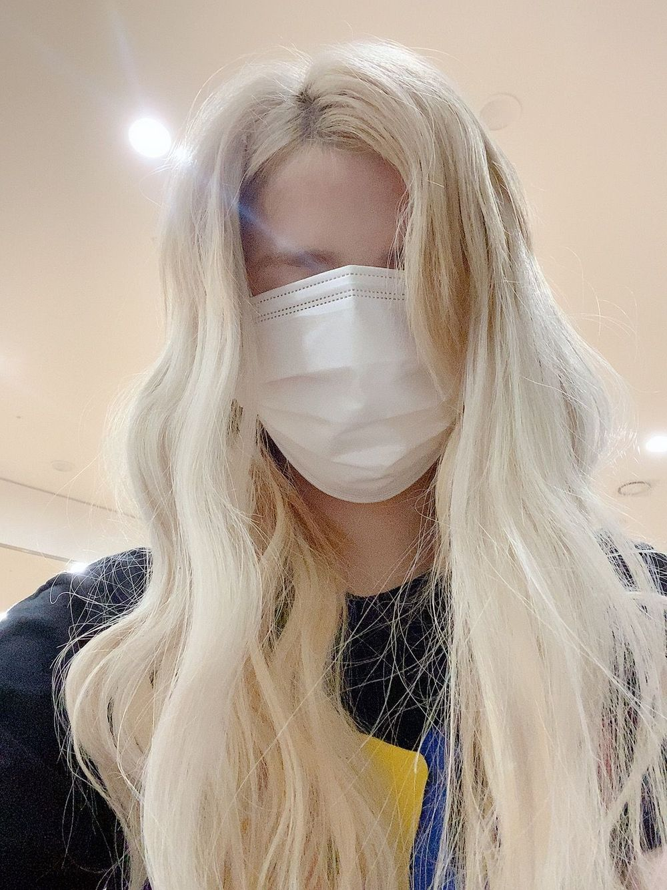

そろそろ…
ひいだよ🍓

爪を切らないと💅🏻✂️
長すぎるね🙃泣
では #ひいまるのナゾやりますね🙋🏻♀️
🔍 例で出してくれたけど
写真フォルダどんな項目あるの📁？
🍞お父さん、スイーツ食べるといつも自撮り送ってくるので「お父さん👨🏻」っていうフォルダある笑
🔍 ひいまる🥟とは！？
🍞これよく聞かれる！
栃木県はイチゴと餃子が有名だからいつも
「ひいだよ🍓」「ひいまる🥟」って付けてる！
魅力度ランキング最下位になっちゃったから
ここでも地味にアピールしてるの！よ！！泣
🔍 お弁当に入ってて嬉しいおかずは何ですか？🍱
🍞肉じゃがとたまご焼き🥚と
冷凍のコーンクリームコロッケ🌽笑
🔍 朝が得意なひーちゃんに
早起きのコツを教えてほしい！🍑
🍞自分が遅刻することによって周りに迷惑をかけるという緊張感をもって毎晩寝ている←
冗談っぽく言ってるけどわりとガチ😊笑
🔍 髪を耳にかけるとき、左側か右側
よくかける方とか癖の方ってありますか？
🍞気に入ってーるのーは ひだりがーおっ🎶
ではまたっ
#ひいまるのナゾ 한다요~><
🔍 작곡은 할생각있어?
🍞해보고 싶어용!!!
근데 컴퓨터 조작을 내가 잘 할수 있을까ㅎㅎㅎㅎ
🔍 최근에 의류광고를 찍었는데
다음엔 어떤 광고를 찍어보고 싶어요!?
🍞빵집 CF 찍고싶어용ㅎㅎㅎ
🔍 히짱의 맛집이나 음식 정보는
대체 어디서 나오는 거야?!ㅋㅋㅋ
🍞항상 인스타에서 #◯◯맛집 이렇게 해서 검색ㅎㅎㅎ
🔍 히이로그(브이로그)를 찍는다면
해보고 싶은 컨텐츠🎬
🍞뭘 보고싶어요~?ㅎㅎㅎ
🔍 글을 쓸 때 손으로 쓰는 편이야 아니면 키보드로 타이핑하는 쪽이야?
🍞당연히 🖐🏻

マスク大きかった笑
ばいばーい👋🏻
ひいまる🥟